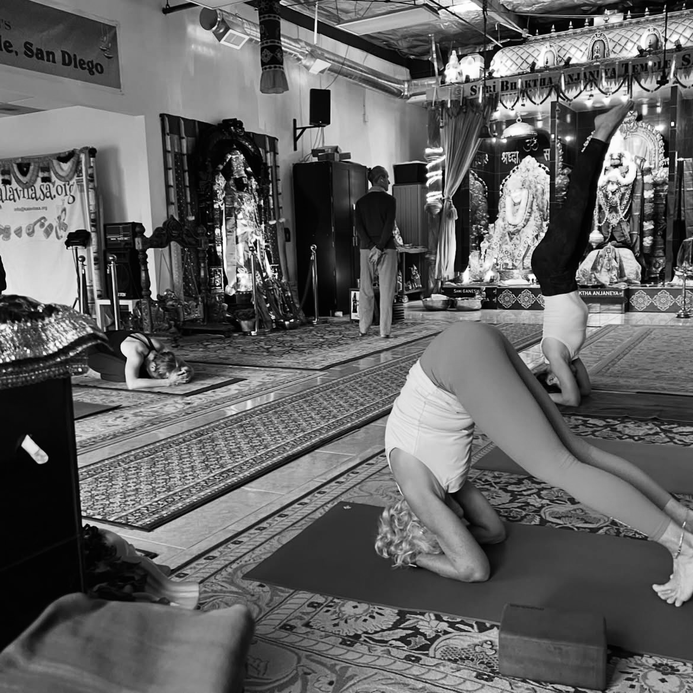
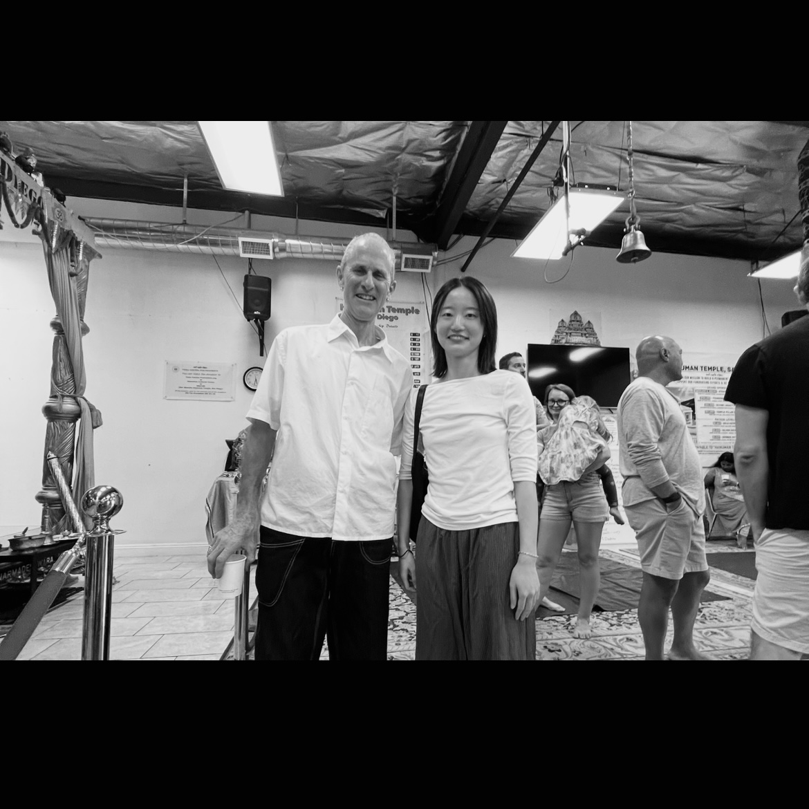
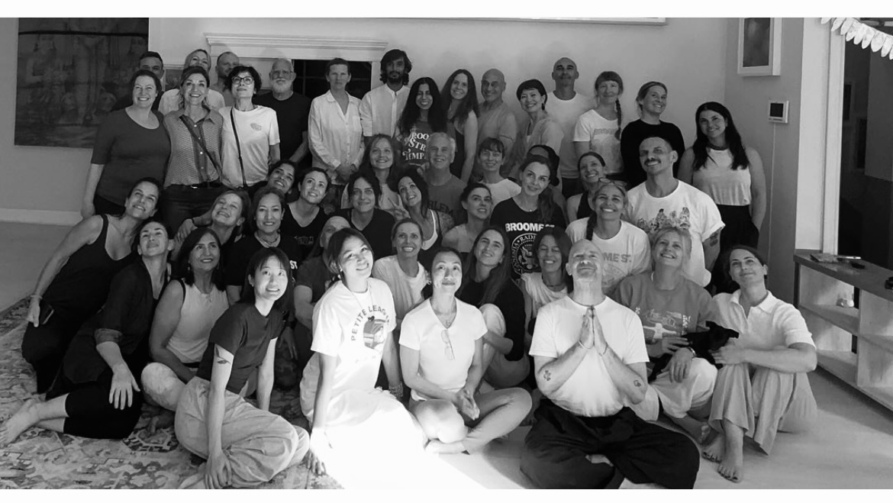
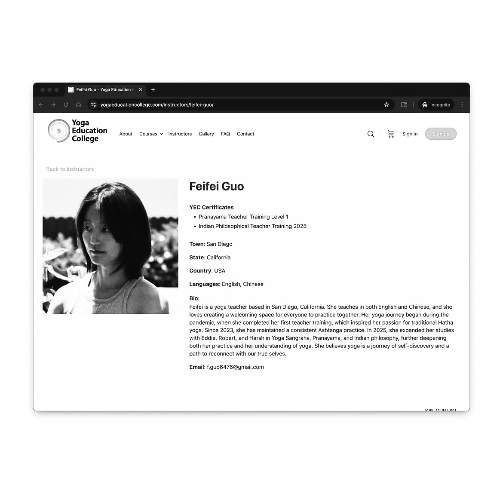

Feifei.

Yoga returns me to the present moment — through abhyāsa, devoted and consistent practice, and vairāgya, the release of attachment to outcome.
Each breath an invitation to move from outward performance toward inner awareness.
A doorway into
inner stillness.
Through āsana and prāṇāyāma, yoga offers a practical path to stillness — preparing the body, nervous system, and mind for deeper concentration and, ultimately, meditation.
When we observe the breath, meet the body's limitations, and notice our reactions within each posture, we begin to see beyond the physical. We glimpse our attachments, our resistance, our comparisons, our fear — and in seeing them clearly, find the first opening toward release.

Years of practice,
layers of understanding.
My yoga journey began during the pandemic, when I completed my first teacher training with Corepower. What started as a way to stay grounded in uncertain times quickly became something deeper — igniting a genuine passion for traditional Hatha yoga and its classical roots.
Since 2023, I have maintained a consistent Ashtanga practice. The structure and discipline of the Ashtanga system — returning to the same sequence, every day — taught me more about the nature of practice than any single class or training ever could.
In 2025, I expanded my studies with Yoga Education College, exploring Yoga Sangraha, Pranayama, and Indian philosophy. This year of study further deepened both my practice and my understanding of yoga — not just as movement, but as a complete science of the self.

Ashtanga practice
With Eddie Stern
Yoga class
Yoga Education CollegeSharing the practice.
Sangraha means "a collection" or "compendium." These classes are grounding and calming sequences of asanas and pranayama that have a deliberate effect on the nervous system's signaling.
The practices originate from the broader Hatha Yoga tradition, rather than from any specific lineage. These sequences have been put together by Eddie Stern, drawing from experimentation, study, and exploration of classical Hatha Yoga practices and texts.
Pranayama is a key practice of both the Ashtanga and Hatha schools of Yoga. It prepares the body, nervous system, and mind for one-pointed concentration, leading to the practice of meditation.
In most yoga classes encountered in the West, there is typically more emphasis on asana and less on pranayama — so we miss out on one of the most important, transformative practices of Yoga. This class will give you a grounding in practicing traditional pranayamas and kriyas.